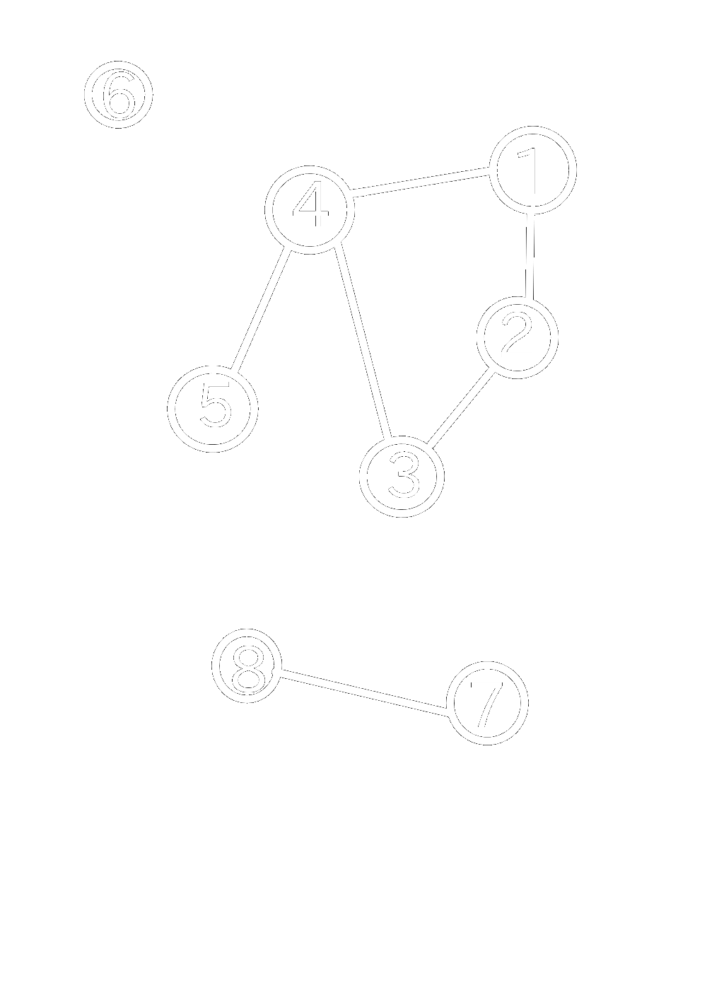

★ Pentru un graf neorientat G=(X,U) cu n vârfuri, matricea de adiacență este o matrice cu n linii și n coloane și elemente din {0,1}, cu:
→ \( A_{i,j} = \left\{ \begin{array}{ll} 1 & \mbox{dacă } [i,j] \in U \\ 0 & \mbox{dacă } [i,j] \notin U \end{array} \right. \)|  | \( A = \left( \begin{array}{ccccc} 0 & 1 & 0 & 1 & 0 & 0 & 0 & 0\\ 1 & 0 & 1 & 0 & 0 & 0 & 0 & 0\\ 0 & 1 & 0 & 1 & 0 & 0 & 0 & 0\\ 1 & 0 & 1 & 0 & 1 & 0 & 0 & 0\\ 0 & 0 & 0 & 1 & 0 & 0 & 0 & 0\\ 0 & 0 & 0 & 0 & 0 & 0 & 0 & 0\\ 0 & 0 & 0 & 0 & 0 & 0 & 0 & 1\\ 0 & 0 & 0 & 0 & 0 & 0 & 1 & 0\end{array} \right) \) |
★Observații:
0;x este egal cu numărul de elemente 1 de pe linia (sau coloana) x;| ★ Lista de muchii a unui graf neorientat reprezintă o mulțime ce conține toate muchiile din graf.
★ Pentru graful alăturat, lista de muchii este: \( U = \left\{ [1,2],[1,4],[2,3],[3,4],[4,5],[8,7] \right\} \) |
★Pentru reprezentarea în memorie putem folosi:
struct {int I,J;}int★ Pentru un graf neorientat cu G=(X,U) se va memora numărul de vârfuri n și apoi, pentru fiecare vârf x, lista vârfurilor adiacente cu x, adică a vârfurilor y cu proprietatea că există muchia [x,y].
★ Pentru graful alăturat, listele de adiacență sunt:
1: 2 4
2: 1 3
3: 2 4
4: 1 5
5: 4
6: vidă
7: 8
8: 7
|
★ La reprezentarea în memorie trebui avut în vedere că dimensiunile listelor de vecini sunt variabile. De aceea, este neeficientă utilizarea unor tablouri alocate static. Astfel, putem folosi:
n tablouri unidimensionale alocate dinamic;n vectori din STL;n liste simplu (dublu) înlănțuite alocate dinamic.